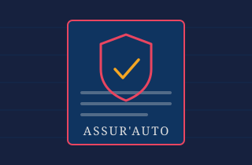

Assurance [Insurance]
Le contrat Assur'Auto (Sanlam) qui couvre le scooter : ce qu'il coûte, ce qu'il couvre réellement, comment ne pas perdre la réduction fidélité, quoi faire dans les cinq jours qui suivent un accident — et les faits essentiels tirés de la lecture intégrale des Conditions Générales, elles-mêmes consultables et téléchargeables en bas de page.
Le contrat en un coup d'œil [The policy at a glance]
| Élément | Détail |
|---|---|
| Produit | Assur'Auto — Multirisque Automobile |
| Assureur | Sanlam Assurance (Sanlam Maroc), entreprise régie par la loi n° 17-99 |
| Document de référence | Conditions Générales — 42 pages, français (archivées sur ce wiki) |
| Prime annuelle | ~1 490 dhs / an — soit environ 124 dhs / mois |
| Durée | 1 an, en tacite reconduction d'année en année |
| Résiliation | Préavis de 30 jours avant l'échéance annuelle, par lettre recommandée ou déclaration contre récépissé |
| Étendue géographique | Maroc + pays de la carte verte et de la carte orange (pays arabes) — la liste exacte figure aux Conditions Particulières |
| Autorité de contrôle | ACAPS — Autorité de Contrôle des Assurances et de la Prévoyance Sociale |
Prix et réduction fidélité [Price & loyalty discount]
| Poste | Montant indicatif | Remarque |
|---|---|---|
| Prime annuelle | ~1 490 dhs | Ordre de grandeur constaté pour ce scooter. Le montant exact dépend de la cylindrée déclarée, des garanties choisies et de votre historique. |
| Équivalent mensuel | ~124 dhs / mois | Utile pour la comparaison : c'est le deuxième poste fixe du scooter, devant l'entretien courant. |
| Après 2 ans sans interruption | Réduction appliquée | À condition de n'avoir jamais laissé le contrat expirer — voir ci-dessous. Le taux exact figure sur l'avis d'échéance et aux Conditions Particulières. |
- Notez la date d'échéance quelque part qui vous réveille — rappel téléphone à J-15, pas à J-1.
- Ne comptez pas sur l'avis d'échéance seul. La Compagnie doit vous aviser de la date et du montant dû avant chaque échéance ; un courrier perdu ne vous rend pas la réduction.
- Un changement de prime se voit venir. En cas de modification du montant, la Compagnie doit prévenir par lettre recommandée au moins 60 jours avant l'échéance ; vous pouvez alors résilier 30 jours avant cette échéance. Sans réaction de votre part, le nouveau montant est réputé accepté.
Ce que couvrent les garanties [What the guarantees cover]
Garantie de base — obligatoire
| Risque | Garantie | Ce que ça couvre |
|---|---|---|
| R1 | Responsabilité Civile | Les dommages corporels ou matériels causés à des tiers par le scooter. C'est la garantie légale minimale — et elle ne couvre rien pour vous ni pour votre scooter. |
Garanties annexes — seulement si stipulées à vos CP
| Risque | Garantie | Intérêt sur un scooter |
|---|---|---|
| R2 | Protection juridique | La Compagnie défend vos intérêts en cas de poursuites, et agit à ses frais pour obtenir réparation quand un tiers identifié est responsable. Utile précisément dans le scénario le plus courant : l'automobiliste qui ne vous a pas vu. |
| R8 | Incendie | Dommages au scooter par incendie. |
| R9 | Vol du véhicule | Disparition ou détérioration après vol ou tentative de vol. Couvre aussi les frais de reconstitution de la carte grise, du permis et de la CIN volés avec le véhicule — plafond 500 dhs / an. Non cumulable avec R10 (vol + incendie « au premier événement »). |
| R14 | Actes de vandalisme | Dégradation volontaire par un tiers. Exclu par défaut des garanties dommages sauf convention contraire aux CP — à demander explicitement si vous stationnez dans la rue. |
| R20 | Protection du conducteur et des passagers (PCP) | Vos propres dommages corporels et ceux de votre passager transporté à titre gratuit : décès, invalidité totale et définitive, frais médicaux. Montants fixés aux CP, barème d'invalidité en annexe des CG. |
Points spécifiques à un deux-roues [Two-wheeler specifics]
En cas de sinistre — les délais [After a claim: the deadlines]
Ces délais sont prévus sous peine de déchéance : les rater peut vous faire perdre le droit à indemnisation, quelle que soit la responsabilité.
| Situation | Délai | À faire |
|---|---|---|
| Tout sinistre | 5 jours max | Déclarer à la Compagnie dès connaissance et au plus tard dans les cinq jours de la survenance — par écrit ou verbalement contre récépissé, au siège, à l'agence dont dépend le contrat, au bureau direct ou à l'intermédiaire mandaté. |
| Vol ou tentative de vol | 24 heures | Déclarer le vol à l'assureur dans les 24 h (week-ends et jours fériés non compris), aviser immédiatement la police ou la gendarmerie royale, faire opposition auprès de l'organisme ayant délivré le récépissé de mise en circulation, et déposer plainte si la Compagnie le demande. |
| Véhicule volé retrouvé | 8 jours | Aviser la Compagnie de la récupération. |
| Avant toute réparation | Dommages > 500 dhs | Ne pas faire réparer avant la visite de l'expert de la Compagnie. Sur un scooter, 500 dhs de dégâts sont vite atteints — un carénage et un rétroviseur suffisent. |
| Blessures (garantie R20) | Au plus vite | Transmettre le certificat du médecin ayant donné les premiers soins, décrivant les lésions, puis tous les documents jusqu'à guérison ou consolidation. Se soumettre au contrôle des médecins mandatés, sous peine de perdre tout droit à indemnité. |
Les faits essentiels [What every owner must know]
Tirés de la lecture intégrale des Conditions Générales. Ce sont les clauses qui décident, le jour d'un sinistre, si vous êtes indemnisé, de combien, et dans quel délai — celles qu'on découvre en général trop tard.
Les chiffres à retenir [The numbers]
| Valeur | Ce que c'est |
|---|---|
| 5 jours | Délai maximum pour déclarer un sinistre, sous peine de déchéance. |
| 24 heures | Délai pour déclarer un vol (week-ends et fériés non compris). |
| 500 dhs | Au-delà de ce montant de dommages, interdiction de faire réparer avant le passage de l'expert. |
| 8 jours | Pour signaler une modification du véhicule (dont la cylindrée) ou la récupération d'un véhicule volé. |
| 30 jours | Délai d'attente minimum avant de pouvoir exiger le règlement d'un vol. Aussi : le préavis pour résilier avant l'échéance annuelle. |
| 1 mois | Délai de paiement de l'indemnité après l'accord amiable (ou dès qu'une décision de justice devient définitive). Règlement au Maroc et en dirhams uniquement. |
| 60 jours | Préavis que doit respecter la Compagnie pour vous annoncer un changement de prime. |
| 2 ans | Prescription : toute action dérivant du contrat est prescrite deux ans après l'événement qui y donne naissance. Passé ce délai, vous ne pouvez plus rien réclamer. |
| 5 ans | Prescription allongée pour les garanties de protection du conducteur et des passagers (R20). |
| 2/3 | Si les dommages dépassent les deux tiers de la valeur vénale du jour du sinistre, le scooter est déclaré en réforme économique : pas de réparation, indemnisation en perte totale. |
| 1 500 dhs | Seuil de définition d'un « objet de valeur » au sens du contrat. |
Les situations où vous n'êtes pas couvert du tout [When cover simply doesn't apply]
Exclusions générales du Titre III : elles s'appliquent à toutes les garanties du contrat, y compris celles que vous payez en plus.
- Pas d'attestation sur vous = pas de garantie. Les dommages sont exclus si, au moment du sinistre, le véhicule ou le conducteur n'est pas porteur de la plaque spéciale ou de l'attestation délivrée par la Compagnie — et la preuve de leur détention vous incombe.
- Courses et compétitions (rallyes, épreuves, essais compris) : exclues, y compris un run improvisé.
- Vêtements, marchandises et objets transportés : les dommages et les vols les concernant sont exclus, sauf stipulation contraire aux CP. C'est ce qui répond à la question du contenu du top-case.
- Franchissement d'oued, ou circulation sur une route, une piste ou un pont déclarés non praticables par l'administration.
- Catastrophes naturelles (inondation, grêle, tempête, séisme, glissement de terrain…) : exclues sauf stipulation contraire aux CP — les garanties R12 et R13 existent précisément pour ça, moyennant surprime.
- Véhicule confié à un garagiste ou à un professionnel de la vente, de la réparation ou du dépannage : les dommages subis pendant qu'il est entre leurs mains ne sont pas couverts par votre contrat (c'est le leur qui joue).
- Dommages causés intentionnellement, faits de guerre, terrorisme, émeutes, risques nucléaires, amendes.
Comment l'indemnité est calculée [How the payout is worked out]
| Âge du véhicule | Carrosserie | Mécanique / pièces d'usure |
|---|---|---|
| 1re année | 0 % | 0 % |
| 2e année | 10 % | 15 % |
| 4e année | 20 % | 25 % |
| 6e année | 30 % | 35 % |
| 10e année | 50 % | 55 % |
Non-paiement : le calendrier exact [What happens if you don't pay]
Deux conséquences que tout le monde sous-estime : pendant la suspension, vous n'êtes plus couvert mais vous devez toujours la prime — et si la prime est fractionnée, la suspension court jusqu'à la fin de l'année d'assurance. La garantie ne reprend qu'à midi le lendemain du paiement des arriérés. C'est aussi, mécaniquement, la fin de la continuité qui vous vaut la réduction.
Cinq réflexes qui protègent votre indemnisation [Five habits that protect your payout]
| Réflexe | Pourquoi |
|---|---|
| Ne reconnaissez jamais votre responsabilité sur place | Aucune reconnaissance de responsabilité ni transaction conclue en dehors de la Compagnie ne lui est opposable — vous vous engagez seul. Décrire les faits est en revanche sans risque : le contrat précise que l'aveu de la matérialité d'un fait ne vaut pas reconnaissance de responsabilité. |
| Ne faites rien réparer avant l'expert au-delà de 500 dhs | Réparer avant la visite prive la Compagnie de la possibilité de constater — et vous de la preuve du dommage. |
| Contestez un chiffrage trop bas | En cas de désaccord sur le montant, vous pouvez demander une expertise contradictoire : chaque partie nomme son expert, un troisième les départage à la majorité, désigné par le président du tribunal en cas de blocage. Chacun paie son expert, le troisième est partagé moitié-moitié. |
| Ne transigez pas avec le tiers responsable | La Compagnie est subrogée dans vos droits contre le tiers après paiement. Si, de votre fait, ce recours devient impossible (accord privé, renonciation, absence de plainte), elle peut être déchargée de tout ou partie de sa garantie. Bonne nouvelle en sens inverse : elle n'exerce pas de recours contre votre conjoint, vos ascendants et descendants, ni les personnes vivant habituellement à votre foyer, sauf malveillance. |
| Ne laissez pas courir un dossier | Deux ans de prescription — cinq pour la garantie conducteur et passagers. Un litige qu'on laisse traîner se règle tout seul, en votre défaveur. |
- Les équipements électroniques ajoutés doivent être déclarés. Autoradio, GPS et « tout autre équipement électronique » ne sont couverts qu'à deux conditions : être fixés ou montés sur le véhicule, et avoir été livrés par le constructeur ou expressément déclarés au moment du montage. Si vous installez un traceur GPS ou une dashcam à demeure, signalez-le.
- La garantie conducteur est plafonnée selon l'âge de la victime. Le capital décès est versé à 100 % entre 12 et 70 ans, mais à 10 % pour un enfant de moins de 5 ans ou une personne de plus de 70 ans (50 % du capital invalidité au-delà de 70 ans). À savoir avant de transporter un parent âgé en passager.
- Déclarez une double assurance. Si le même risque vient à être couvert par un autre contrat, la déclaration est immédiate ; une double assurance intentionnelle ou frauduleuse peut entraîner la nullité du contrat.
Vie du contrat — les cas qui vous concernent [Policy lifecycle]
| Situation | Effet sur le contrat |
|---|---|
| Vous vendez le scooter | En cas d'aliénation du véhicule, le contrat est résilié de plein droit. La portion de prime correspondant à la période postérieure à la résiliation n'est pas acquise à la Compagnie et doit vous être remboursée — pensez à la réclamer au moment de la revente. |
| Vous ne payez pas la prime | Suspension de la garantie puis résiliation possible par la Compagnie (art. 21 de la loi 17-99). Un scooter roulant sous garantie suspendue est, en pratique, un scooter non assuré. |
| Déclaration inexacte ou omission | Résiliation possible avant sinistre ; après sinistre, réduction ou perte d'indemnité. Cela vise aussi bien la cylindrée que l'usage du véhicule ou l'identité du conducteur habituel. |
| Perte totale suite à un événement non garanti | Résiliation de plein droit du contrat. |
| Vous voulez changer d'assureur | Dénonciation 30 jours avant l'expiration de l'année d'assurance en cours, dans les formes prévues (acte extrajudiciaire, lettre recommandée, ou déclaration contre récépissé). Passé ce délai, la tacite reconduction s'applique pour un an — et une résiliation subie casse de toute façon la continuité qui vous vaut la réduction. |
Le document — Conditions Générales [The policy wording]
Le texte intégral des Conditions Générales Assur'Auto, archivé ici pour que la version papier puisse rester rangée avec vos autres documents. Ouvrez-le, téléchargez-le, ou lisez-le directement dans la page.

Conditions Générales Assur'Auto — Multirisque Automobile (Sanlam)
Le document contractuel de référence : définitions, garantie de base (RC), garanties annexes R2 à R20, exclusions générales, fonctionnement du contrat, obligations en cas de sinistre, et en annexe le barème d'indemnités de la garantie Protection du Conducteur et des Passagers ainsi que le barème de vétusté.
Lire dans le navigateur [Read in the browser]
Le PDF ne se charge qu'à l'ouverture du panneau, pour économiser les données mobiles.
Aperçu — Conditions Générales Assur'Auto (42 pages, 388 Ko)
Si l'aperçu ne s'affiche pas, ouvrez les Conditions Générales dans un nouvel onglet.
- Titre I — la garantie de base : Responsabilité Civile (R1).
- Titre II — les garanties annexes : protection juridique (R2), protection du véhicule (R3 à R19), protection des occupants (R20).
- Titre III — les exclusions générales : ce qui n'est couvert dans aucun cas.
- Titre IV — le fonctionnement du contrat : durée, résiliation, suspension, déclaration des risques, obligations en cas de sinistre.
- Annexes — barème des indemnités R20 (invalidité) et barème de vétusté.
Une question juridique ? [Legal questions]
| Ressource | Ce que c'est | Lien |
|---|---|---|
| Chatbot IA — droit marocain | Assistant conversationnel officiel entraîné sur le droit marocain. Le bon réflexe pour les questions qui dépassent ce wiki : portée exacte d'un article du code des assurances, procédure après un accident, contestation d'une décision, démarches administratives liées au véhicule. | Ouvrir le chatbot → |
| Sanlam Maroc | L'assureur de ce contrat — 216 Bd Zerktouni, Casablanca. Pour tout ce qui touche à votre police, l'interlocuteur direct reste l'agence dont dépend le contrat. | sanlam.ma → • +212 522 42 06 06 |
- L'accès se fait par adresse IP, sans nom de domaine : le navigateur affichera probablement un avertissement de certificat. Vérifiez que vous êtes bien sur le service attendu avant de saisir quoi que ce soit, et ne transmettez jamais de pièce d'identité, de numéro de police ni de coordonnées bancaires dans une conversation.
- Une réponse d'IA n'est pas une consultation juridique. Utilisez-la pour comprendre un texte, préparer vos questions et savoir quoi demander — puis faites confirmer par l'agence, un avocat ou l'ACAPS avant d'engager une action ou de renoncer à un droit. Les délais de prescription courent pendant que vous cherchez.